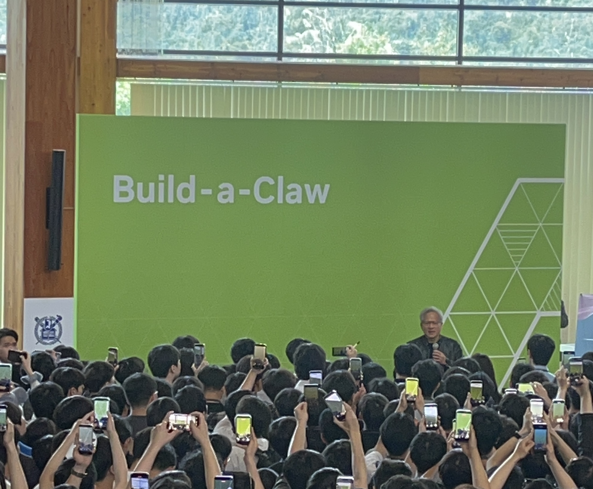

“Innovation comes from a firm belief that something will happen five to ten years from now, and that this technology will be needed.”
I recently attended NVIDIA’s Build-a-Claw special lecture. With the release of OpenClaw, NVIDIA’s DGX Spark and Apple’s Mac mini have drawn renewed attention as personal computing environments for the next generation. Unlike conventional LLMs, OpenClaw acts as a persistent agent: it receives instructions through channels such as Telegram or Slack and, within the tools and permissions it is given, carries out multi-step tasks. Being open source, it can be configured with considerable flexibility, though for a local, always-on setup, it effectively requires a personal machine that stays running at all times. This is why NVIDIA’s DGX Spark and Apple’s Mac mini have drawn renewed attention among developers as possible homes for such always-on local agents.
Looking at Technology Through the Lens of the Future

Jensen Huang’s way of looking at technology left the strongest impression. Rather than measuring it against present demand, he looked toward a future that had not yet arrived.
When personal computing was still being defined, Huang imagined what would come next and helped build technologies before the market had fully formed. The early DGX systems carried a similar spirit: NVIDIA built DGX-1 specifically for deep learning in 2016, and the first system reached OpenAI at a moment when the future scale of AI was still difficult to foresee. What followed became the backbone of today’s AI research infrastructure.
The infrastructure NVIDIA built has since become a foundation the entire AI ecosystem relies on, from CPUs and GPUs to AI agents and Physical AI.
As he put it:
“Innovation comes from a firm belief that something will happen five to ten years from now, and that this technology will be needed.”
When an early attempt did not succeed, he did not give up. He immediately set about building something new and moved toward the next possibility.
Many companies that reshaped the world, including Apple, Microsoft, Tesla, and Meta, were driven by the same conviction. Rather than responding to existing demand, they imagined changes most people had yet to sense and prepared for a future they believed in.
The talk renewed a sense of purpose I have long carried: to keep sensing problems before they come clearly into view, and to keep preparing the work to address them.
Build-a-Claw, and the Promise of AI Agents
The Build-a-Claw demo, which had been the day’s main purpose, took place after Jensen Huang’s talk. We connected a DGX Spark to a computer and a phone, and as commands were issued through Telegram, we could watch several agents being orchestrated in real time. Watching the agents distribute and carry out tasks on their own was a clearly different experience from how I had used LLMs before. It went well beyond answering a single question.
Concerns about privacy and security naturally come up when an agent acts on files stored on a personal machine. But what stayed with me beyond those concerns was a larger question: as AI becomes capable of acting on our behalf, embedded in our devices and woven into our routines, it begins to feel less like a tool and more like a presence. As these technologies advance and enter daily life, how do they shape the way we live, relate to one another, and trust?
AI and Everyday Life
That question has long been at the center of what I find most compelling about AI research.
On one hand, there is much to look forward to. Through Physical AI or Home IoT, a system might sense the circumstances within a home and support people who need it most, such as those living with depression, the elderly, or children in dual-income households. I am curious about the forms such technologies might take, and how they could help make people’s lives healthier and happier.
On the other hand, the same technology also raises concerns, particularly around how it might reshape the way people relate to one another. Children today are growing up alongside AI tablets and robots, and there are growing questions about how these interactions may affect language development and sociality. Some moments hint at how real these attachments are becoming. When a beloved robot service was discontinued, children grieved its loss. In Toy Story 5, a child drifts toward a tablet and the toys are quietly left behind. AI is patient and responds in ways people want to hear. Human conversation rarely does, and if people gradually turn to AI for the closeness they once sought in each other, society could drift toward a quieter kind of isolation.
These questions do not undermine the promise of innovation. They are part of it. Understanding what technology truly brings to people’s lives, including its unintended effects, is itself a form of preparation for the future.
Innovation does not come merely from making well what is needed right now. It comes from imagining a future most people cannot yet see clearly, from believing in the technology that future will require, and from continuing to build it even when there seems to be no demand at all. Hearing that conviction from someone who has lived it left a mark. The talk renewed something I have long carried: a desire to become that kind of innovator, someone who imagines the future before it comes clearly into view, takes seriously the changes it will bring, and never loses sight of what a technology truly does to people’s lives.